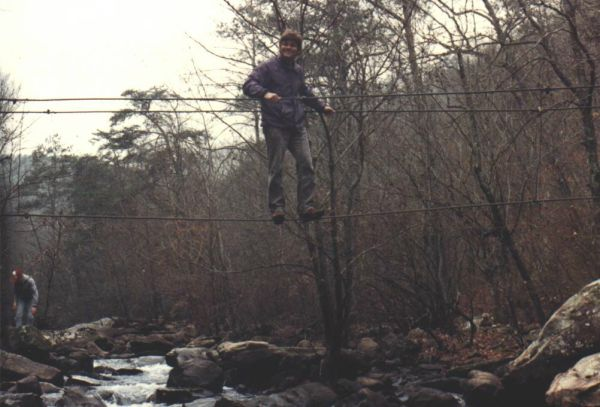
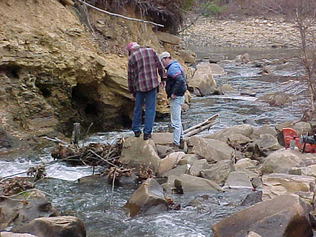
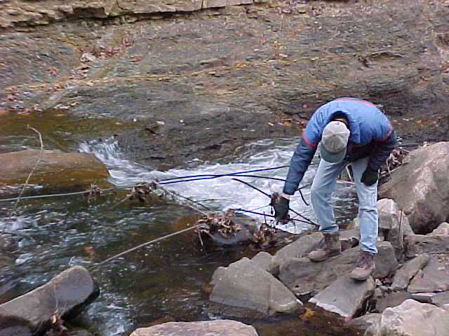
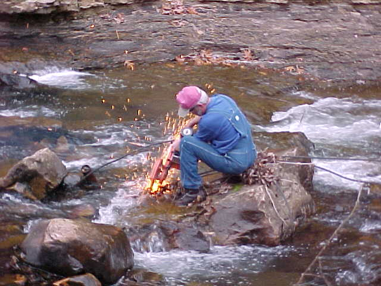
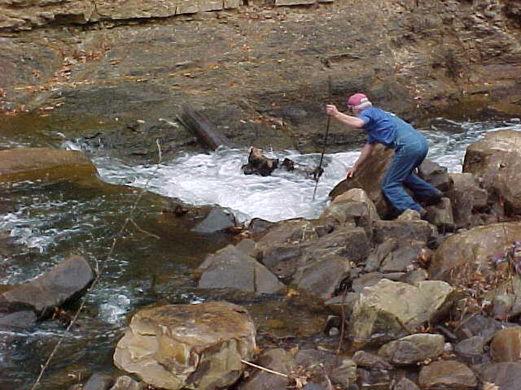

Johnnies Creek Cable Removal 12/2000
I'd heard there was a big flood around LRC in 1985 where several bridges were washed out. Possibly the dam on Upper Johnnies was even breached. Here is a picture of the cable bridge that used to span the last rapid.
Stephen Brewer continues: "It was taken probably about 1983. The fellow in the picture is my wife’s step uncle. His name is Buddy Weeks. The bridge was anchored on each end with steel poles sunk into large rocks. I’m not absolutely certain if it is the same rock, but there is a large rock maybe ¼ mile downstream on the side of Little River that has a pole in it. If it is the same rock, that was quite a powerful force that carried it that far downstream. If I remember right, the rock is about the size of a small car.
By the way, the flood took place on July 24, 1985. The streamflow for that day
was 53,800 CFS, the highest ever recorded on Little River. This info is available at the usgs website.
I also heard the story about a dam giving way somewhere upstream which certainly made the flooding worse than
what it already was. The high water was originally caused by a very heavy thunderstorm over the area that dumped
several inches of rain in a short amount of time. As you know, high water is not the norm for Little River during
that time of the year.
 photo courtesy Stephen Brewer
It is an easy rapid compared the the rest on the run, but a swim could have been
your last. So, we removed the cables.

The master (Gary) confers with his assistant. The old tree and the rootwad
are infested with cables, most of which are stuck under rocks upstream as well.
Little River is in the background.

Mark pulls a few cables out in mid-Job.

Gary at work. The hotsaw was ridiculously well suited to the task.

Gary puts the finishing touches on the last cable. All of the cables that we
could see are now out of the streambed except for a few ends sticking out from between rocks.
We intended to do this work at lower water but things are a bit wetter this year
than last so far. We tossed the rootwad over to the other side as best we could in hopes that it will wash
out during the next big rain. Care should be taken here until someone verifies that it is gone...